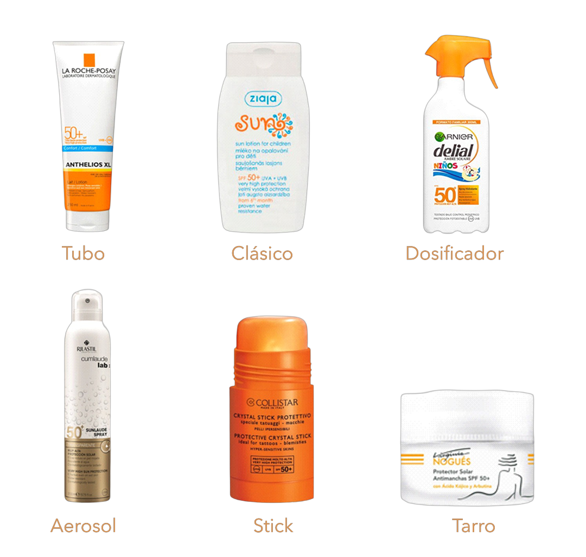

Variables de decisión
Estrategias del mix de marketing.
Introducción
Las decisiones se deben tomar para el mercado español y, a efectos del simulador, todas las empresas parten de la misma situación inicial, evitando así diferencias entre los equipos competidores. Del mismo modo, el presupuesto disponible es idéntico para todas ellas, de modo que tengan exactamente las mismas oportunidades de crecimiento en el mercado.
El simulador cuenta con un abanico básico de decisiones, organizadas del siguiente modo:
- Decisiones de fabricación
- Decisiones de precio
- Decisiones de distribución
- Decisiones de diseño de producto
- Decisiones de comunicación
Además de estas decisiones, que tienen un carácter explícito porque inciden directamente en el presupuesto de cada empresa, hay decisiones estratégicas implícitas, como las decisiones de segmentación, la estrategia de competitividad, o la estrategia de posicionamiento, que intervienen de forma indirecta en el proceso de toma de decisiones, ya que no implican una asignación concreta del presupuesto disponible.
Las decisiones del simulador se deben tomar exclusivamente para el mercado español.
A continuación, se describe en qué consisten estas decisiones, además de aportar información que será útil durante el juego. La secuencia de las decisiones no tiene ninguna relevancia, y no es necesario tomarlas en el mismo orden que aquí se exponen.
Decisiones de fabricación
El simulador incorpora una decisión muy importante en cuanto a los resultados comerciales se refiere, que consiste en establecer el número de unidades a fabricar. La fabricación del producto es uno de los costes más importantes para la marca, y establece un límite físico a la cantidad de producto que se puede vender. Por otra parte, si no se agota la cantidad de producto fabricada en el periodo de decisión correspondiente, el stock sobrante generará unos costes (almacenaje, etc.) que se descontarían de los ingresos obtenidos.
Además, la gestión del stock tiene las siguientes particularidades:
- El stock generado en el Período I estará disponible para su venta en el Período II.
- El diseño del producto que está en stock se puede modificar para el Período II (Factor de protección, resistencia al agua, envase, etc.).
- En caso de que se modifique el diseño del producto que está en stock, se computarán los costes de modificación correspondientes. Es decir, si se mejoran las características del producto, se computará el coste adicional que supongan dichas mejoras, y si se reducen, se abonará la cantidad correspondiente en la cuenta de resultados.
Decisiones de precio
El mercado de los productos destinados a la protección solar muestra una heterogeneidad muy grande de precios. Tomando como unidad básica el envase de 100 ml., los precios oscilan entre los 4€ de los productos más económicos, hasta los 80€ de las marcas más exclusivas. Es importante tener en cuenta que estos son los precios actuales del mercado, pero no existe información fiable sobre cuál debería ser el precio mínimo aceptado por el consumidor, ni tampoco sobre el máximo que podría estar dispuesto pagar. Sin embargo, sí hay investigaciones que muestran que, en esta categoría, la demanda es bastante elástica con respecto al precio en algunos segmentos.
Los precios oscilan entre los 4€ de los productos más económicos, hasta los 40€ de las marcas más exclusivas.
Decisiones de distribución
Las decisiones de Distribución Comercial constan de tres canales diferentes, en los que se debe decidir el presupuesto destinado a cada uno de ellos. Cuanto más presupuesto se destine a un canal, mayor esfuerzo estará haciendo la empresa para llegar a los consumidores finales. Los tres canales son Hipermercados, Supermercados y Tiendas especializadas, que incluyen farmacias, parafarmacias, droguerías y perfumerías. Todas las enseñas cuentan con venta física y online, aunque el porcentaje de ventas en establecimientos físicos en esta categoría aún es muy alto (77%). Las decisiones de inversión se deben expresar en euros, y conviene tener en cuenta que la cobertura de la distribución física tiene un límite, impuesto por el número de establecimientos que existen en el mercado.
Decisiones de diseño de producto
El simulador permite diseñar y realizar modificaciones en las características físicas del producto, y cada una de esas modificaciones lleva asociado un coste determinado. Las características disponibles son las siguientes: factor de protección, ingredientes naturales, nivel de resistencia al agua, componentes vitamínicos C y E, y tipo de envase. El diseño de los componentes del producto se realiza a partir de una escala de 0 a 10 puntos (hay excepciones cuando la característica no puede ser cero, como en el factor de protección), salvo el tipo de envase, que tiene un coste fijo estipulado en la Tabla 4. Se debe tener en cuenta el “coste por punto” que se refleja en la Tabla 3, e investigaciones que señalan que no siempre es mejor aumentar una característica de forma indefinida, y que puede existir una combinación óptima que proporcionaría los mejores resultados en términos de preferencia, satisfacción y lealtad del consumidor.
| Característica | Coste por punto (€) |
|---|---|
| Factor de protección | 0.45 |
| Ingredientes naturales | 1.22 |
| Resistencia al agua | 0.72 |
| Vitaminas C y E | 1.45 |
La descripción detallada de cada variable de diseño es la siguiente:
Factor de protección
El factor de protección solar (FPS) es una medida que indica hasta qué punto la piel estará protegida de los rayos ultravioleta. Este tipo de radiación puede causar quemaduras, daños permanentes en la piel, y es un factor de riesgo en la mayoría de los tipos de cáncer de piel. El FPS oscila entre valores muy bajos (1 o 2), hasta valores iguales o superiores a 50. No obstante, la escala de protección no es lineal y, por ejemplo, un FPS de 15 bloquea el 93% de los rayos ultravioleta, un FPS de 30 bloquea el 97%, y un FPS de 50 bloquea el 98% de la radiación.
Hay otros factores que influyen en los posibles efectos perjudiciales de la exposición prolongada al sol. Entre ellos están las condiciones meteorológicas (mayor o menor emisión de radiación ultravioleta), la hora del día, el tipo de piel, el modo de aplicación del protector, o la cantidad que se usa en cada aplicación. Hay que tener en cuenta, no obstante, que la aplicación de los protectores solares inhibe la capacidad de la piel de producir vitamina D, y que su ausencia puede ser causa de numerosas patologías, como pérdida de densidad ósea, que podría generar osteoporosis y fracturas, o raquitismo en los niños. Además, la falta de vitamina D también puede estar asociada a otras afecciones médicas, como la diabetes, la hipertensión, o la esclerosis múltiple. Esto explica por qué hay consumidores reacios a utilizar este tipo de productos, que prefieren exponerse al sol de forma natural, pero con cautela.
La escala de decisión relativa al FPS en el simulador tiene un rango de 1 a 10, con la correspondencia en coste que aparece en la Tabla 3.
Ingredientes naturales
Los protectores solares pueden estar compuestos en parte, o exclusivamente, de ingredientes naturales u orgánicos. Aunque la variedad es cada vez más amplia, los más comunes son los que incluyen “aloe vera”, mantecas, aceites esenciales, o minerales como el óxido de zinc. El diseño de protectores solares naturales encarece de forma significativa el producto, pero hay consumidores preocupados por este tipo de componentes, y por todo lo que tenga que ver con el cuidado del medio ambiente.
En el simulador, la cantidad de ingredientes naturales se puede indicar en una escala de 0 a 10, en la que 0 indica la ausencia de ingredientes naturales, mientras que una puntuación igual a 10 indicaría que el producto está compuesto íntegramente por este tipo de compuestos naturales y ecológicos.
Resistencia al agua
La resistencia al agua, al sudor o a la humedad en general, es una de las propiedades que se encuentran con más frecuencia en la oferta actual del mercado. Aunque parte de los consumidores desconfían de la capacidad de resistencia a la humedad que tienen los protectores solares, lo cierto es que dicha capacidad solo es eficiente si el producto se utiliza de forma adecuada.
En el simulador se puede especificar la resistencia al agua, sudor, etc., del protector solar mediante una escala de 0 a 10. El cero indicaría la ausencia de componentes que mantengan intacto el efecto del protector tras su contacto con el agua, mientras que una puntuación de diez indicaría la máxima resistencia del protector solar frente a cualquier tipo de interacción con la humedad.
Vitaminas C y E
La protección de la piel no solamente consiste en la filtración de la radiación ultravioleta. Los consumidores son cada vez más conscientes de los cuidados adicionales que se necesitan, y los fabricantes han optado por incluir componentes vitamínicos que complementan la acción del protector solar. Entre los más populares se encuentran aquellos que incluyen vitaminas C y E. La vitamina C es muy eficaz sintetizando colágeno, ayudando así a mantener la elasticidad de la piel y a evitar su envejecimiento prematuro. Por otra parte, la vitamina E parece tener propiedades antioxidantes, y ayuda a la renovación de los tejidos dañados, especialmente si ese daño ha sido producido por quemaduras solares.
El simulador permite la incorporación de estas vitaminas al producto mediante una escala de 0 a 10. El cero indicaría la ausencia de vitaminas C y E, y el 10 la cantidad máxima permitida por los organismos reguladores, según se establece en el reglamento 1223/2009 del Parlamento Europeo.
Tipo de envase
En el mercado se pueden encontrar diferentes sistemas de envasado y aplicación del producto. Aunque los más comunes son los envases clásicos, con un simple tapón, existen otros más sofisticados con distintas características. El objetivo siempre suele estar relacionado con la facilidad de aplicación, y con la correcta difusión de la cantidad idónea de protector solar.
Figura 2: Tipos de envase.
Los distintos tipos de envase se resumen en la Figura 2, y el coste de fabricación unitario para cada uno de ellos en la Tabla 4.
| Tipo de envase | Coste unitario (€) |
|---|---|
| Clásico | 0.31 |
| Tubo | 0.42 |
| Dosificador | 0.83 |
| Stick | 0.68 |
| Tarro | 0.52 |
| Aerosol | 0.96 |
Decisiones de comunicación
Las decisiones de comunicación se desglosan en dos bloques: a) inversión económica en televisión, radio, revistas y prensa, e Internet, y b) tipo de mensaje. La inversión económica se debe establecer en euros, y se debe tener en cuenta que el simulador no solo tiene en cuenta la presión publicitaria en cada medio, sino también las posibles interacciones que se produzcan entre ellos. Los medios incluidos contienen, en mayor o menor medida, relación con los segmentos de los que consta la categoría de producto.
El simulador permite la posibilidad de combinar entre sí todos los tipos de mensaje.
No obstante, las inversiones en comunicación pueden ser más o menos efectivas en función del mensaje elegido. El simulador permite elegir entre seis opciones distintas que se pueden combinar sin ningún tipo de restricción. Dichas opciones son las siguientes: social, humor, miedo, romance, aventura y éxito. A continuación, se describe brevemente cada una de ellas, y el sistema de elección correspondiente.
Cuando el argumento se centra en el tono “social”, se destacan beneficios relacionados con la aceptación social, la facilidad para integrarse en grupos sociales, o la posibilidad de destacar dentro de un grupo social. Por otra parte, el tono “humorístico” hace referencia a situaciones desenfadadas, divertidas y, por tanto, de actitudes positivas narradas desde un punto de vista cómico. La apelación al “miedo”, uno de los recursos más utilizadas en publicidad, se centra en destacar las consecuencias negativas de la falta de protección en la piel (aparición de enfermedades graves, etc.), y suelen apoyarse en mensajes de tipo testimonial, con personas que las han sufrido. El siguiente tono disponible en el simulador es el “romance” en todas sus variantes, incluida la apelación al sexo, uno de los recursos más utilizados y estudiados en la comunicación publicitaria. En esta opción, el mensaje se centraría en los beneficios asociados al protector solar que pueden resultan atrayentes o atractivos para otras personas. La siguiente opción se centra en el concepto de “aventura”, destacando beneficios relacionados con lo emocionante, lo desconocido, o el descubrimiento. Por último, el “éxito” también es uno de los recursos narrativos más frecuentes en los mensajes publicitarios. En este caso, los beneficios van asociados al éxito profesional que, en general, suele relacionarse con la riqueza material, el estatus que proporcionan ciertas actividades, cargos de responsabilidad, etc., o la satisfacción con un determinado estilo de vida.
El modo de establecer el tono del mensaje en el simulador es a través de una escala de 0 a 10 para cada una de las opciones disponibles. El cero indicaría la ausencia absoluta de elementos relacionados con un determinado tono en el mensaje, y el diez representaría la máxima presencia del tono seleccionado. El simulador permite la posibilidad de combinar los tipos de mensaje del modo que se considere oportuno. Por ejemplo, el tono del mensaje puede ser de “humor” y “aventura” al mismo tiempo. Sin embargo, algunas combinaciones pueden ser menos compatibles como, por ejemplo, la apelación al “miedo”, y el “humor”. En cualquier caso, el simulador permite cualquier combinación, dejando al criterio de la marca cómo diseñar el contenido del mensaje. Conviene mencionar que la elección del tipo de mensaje no genera ningún coste para la empresa, y el simulador no contempla posibles diferencias relacionadas con los costes de producción, realización, etc., del mensaje publicitario.